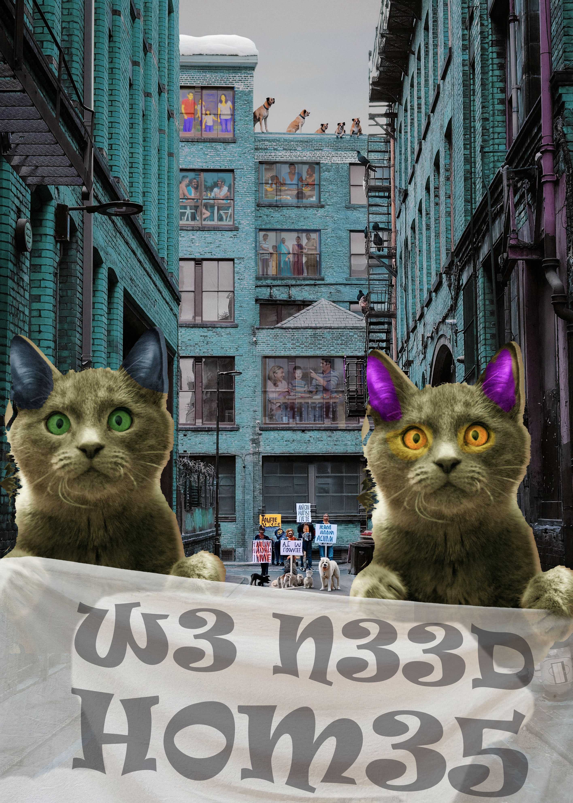
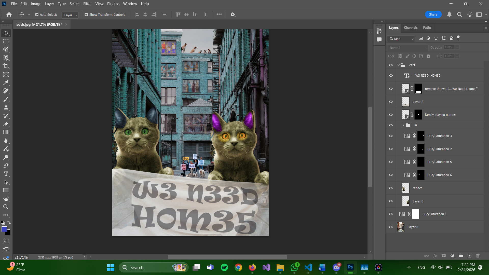

Arena
LinkedIn

montage "Contemperary" |

Log of Photoshop |
While trying to choose a social issue that I felt was ignored and not seen properly is the fact that the stray pet population is increasing exponentially to the point that we see newborn animals being left for dead and the people not trying to help them.
The animals that we see on the street are not being treated well and the shelters that take them and can’t hold them for long without the use of euthanasia as an option to control the population of animals. The people that take care of these animals can try their best to help them but with more animals
reproducing their hands are filled with a responsibility they could never control. The people that ignore them give them less hope to experience a full life that a pet can provide.
From cats to dogs and more suffering from the recent cold that has been coming over the last few months they truly
suffer the most and they won’t receive the help they need.
For the Montage I focused on the small details that give a sense of cold outdoors and warm and inviting indoors. For the saturation of the background the focus was to lower it as if the city streets were cold and gloomy, while making the saturation of the people in the windows to be warm but at the opacity of 50% to keep them inside to show the difference between outside and inside.
The cats in the front hold the sign is to drag the attention of the viewer with the use of the saturation around eyes and ears to direct the view to the sign saying “W3 N33D H0M35” which was added to the front of the banner.
In the background small sections of the background had ai added to show the protest with animals that have homes to show support can come from anywhere and the animals on the roof and fire escape to show that this problem could cause animals to find homes in unordinary locations.
For the effect filters I clipped art the cat and duplicated to represent is as holding the sign together but making sure that they were not the same cat. Finally, I increased the vibrance to lighten the colors and show the difference between outside and inside.